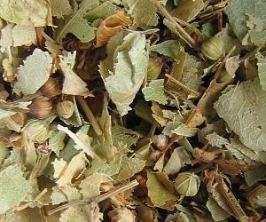
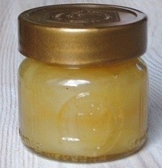

|
| Wie wird die Winterlinde genutzt?
Die getrockneten Blütenstände werden als Tee aufgegossen.
Der intensive Duft der Blüten ist ein beliebtes Aroma für Seife.
 |  Der Nektar der Blüten wird von Bienen gesammelt und zu Honig verarbeitet. Dieser Honig wird als Lindenblütenhonig verkauft.
Das Holz ist gleichzeitig weich und fest. Es ist gut zur Herstellung von Spielzeug geeignet.
|